01
Pimalai Resort & Spa
Our base on Koh Lanta. We stayed in a spacious duplex private pool villa, giving us somewhere to properly switch off between swims, meals and island adventures.
OUR KOH LANTA
Koh Lanta felt like exactly the kind of island escape we were looking for. Beautiful beaches, warm water and a slower pace made it easy to settle into holiday mode without feeling that we needed to fill every day. We stayed at Pimalai Resort & Spa in a spacious duplex private pool villa, which quickly became our own little retreat. Days developed an easy rhythm — swims, time around the villa, daily Muay Thai lessons, relaxed meals down the beach and plenty of time simply enjoying being together.
FROM OUR CAMERA
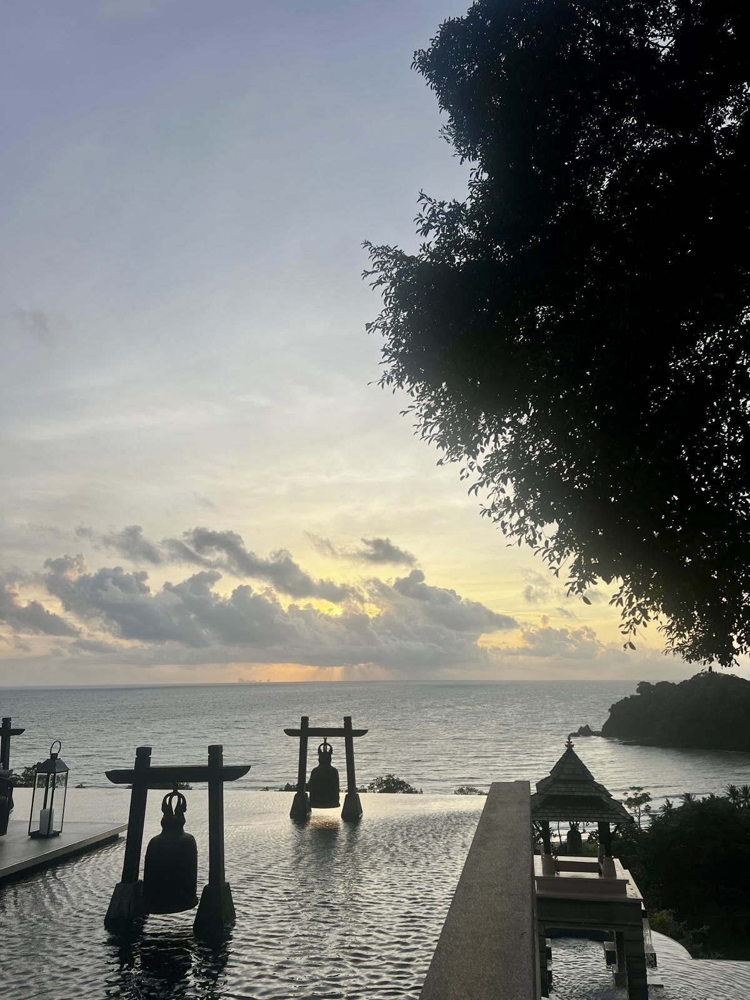
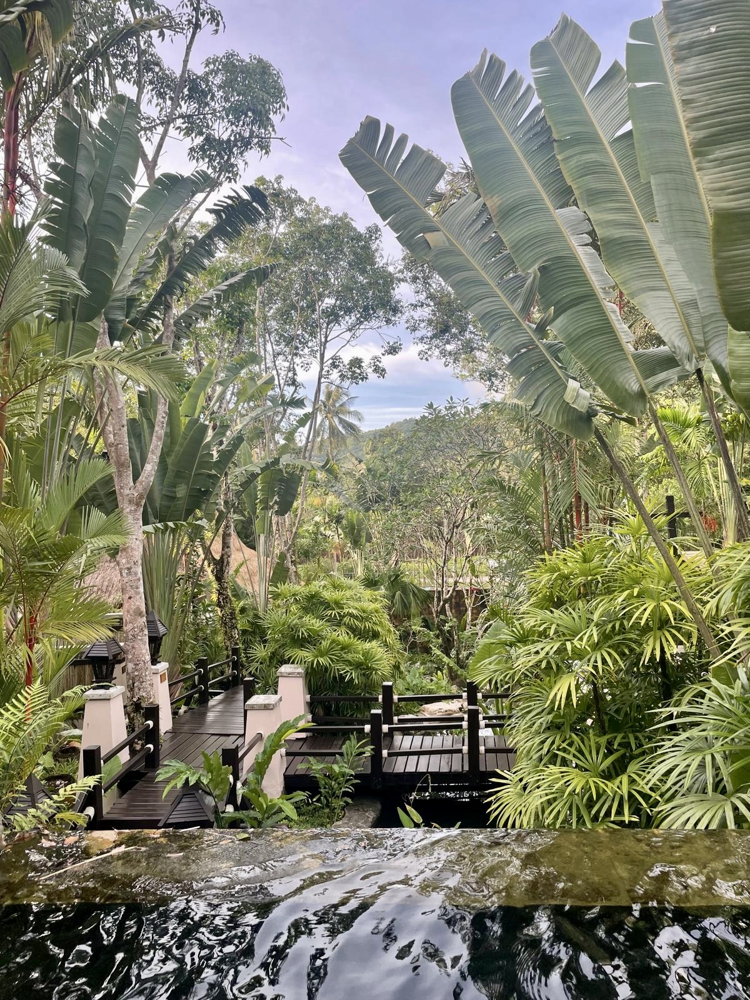
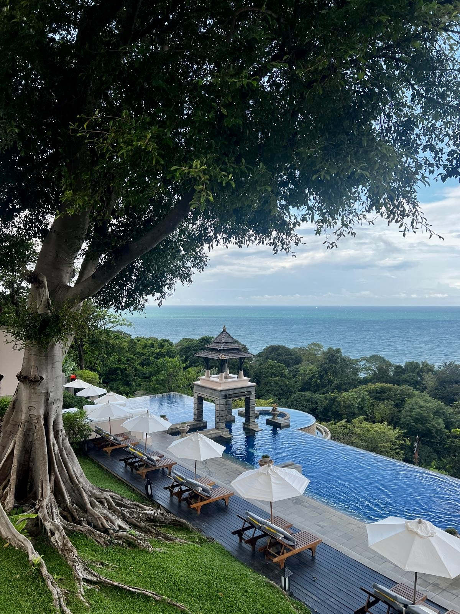
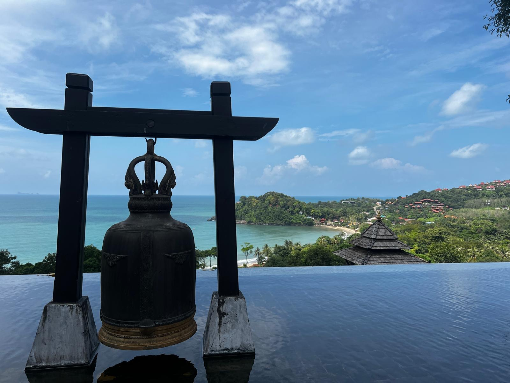
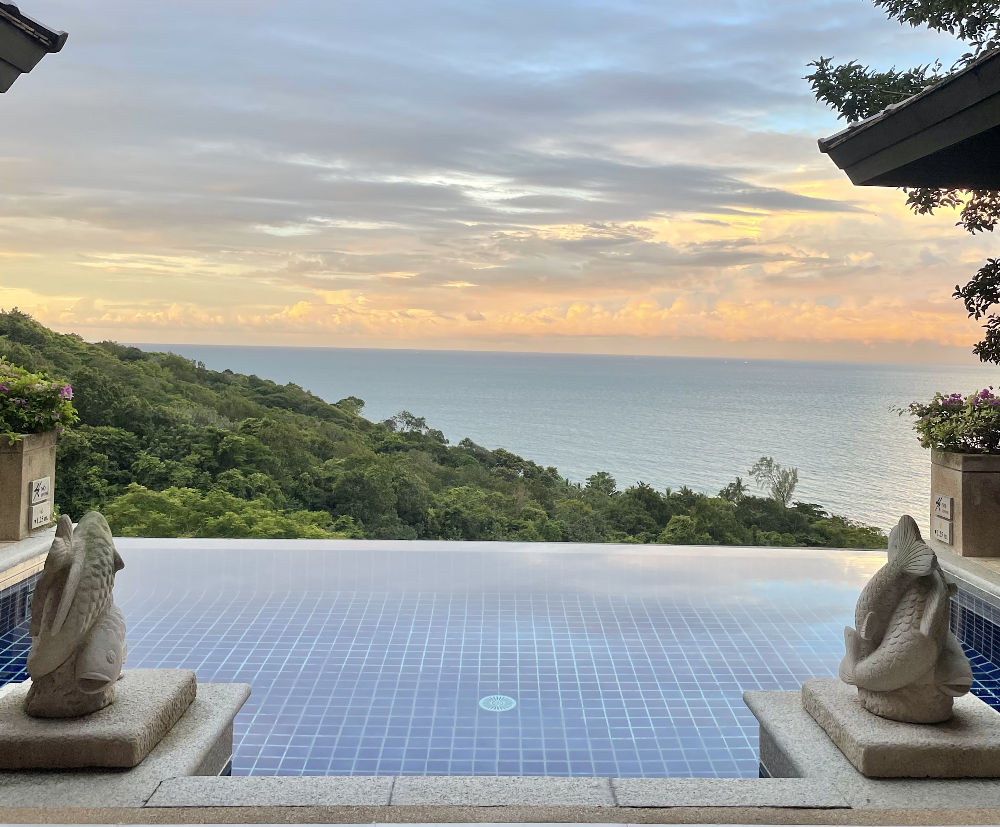
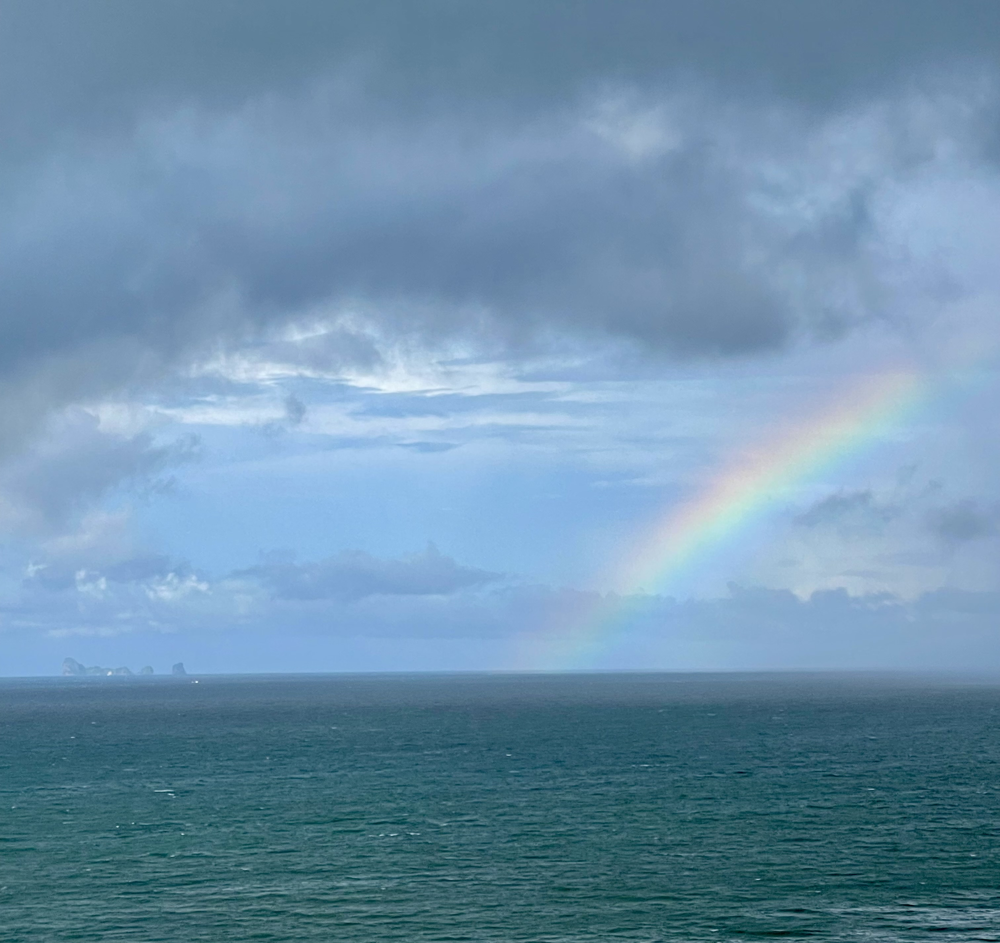
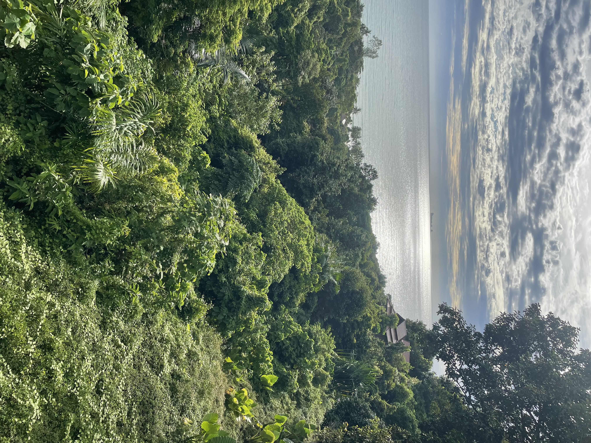
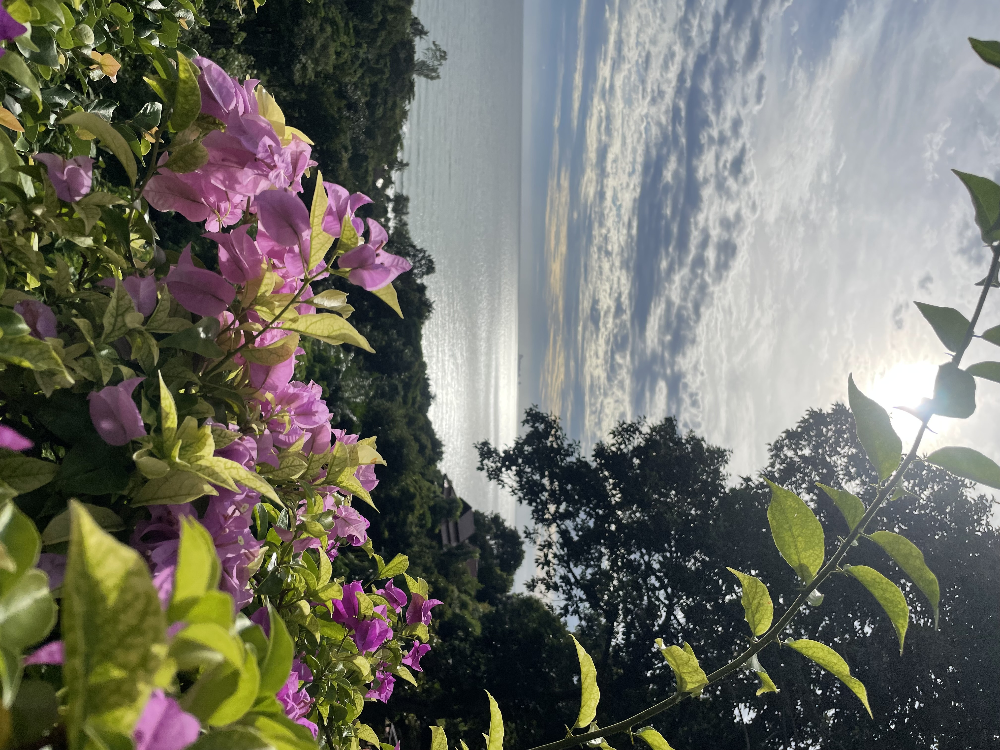
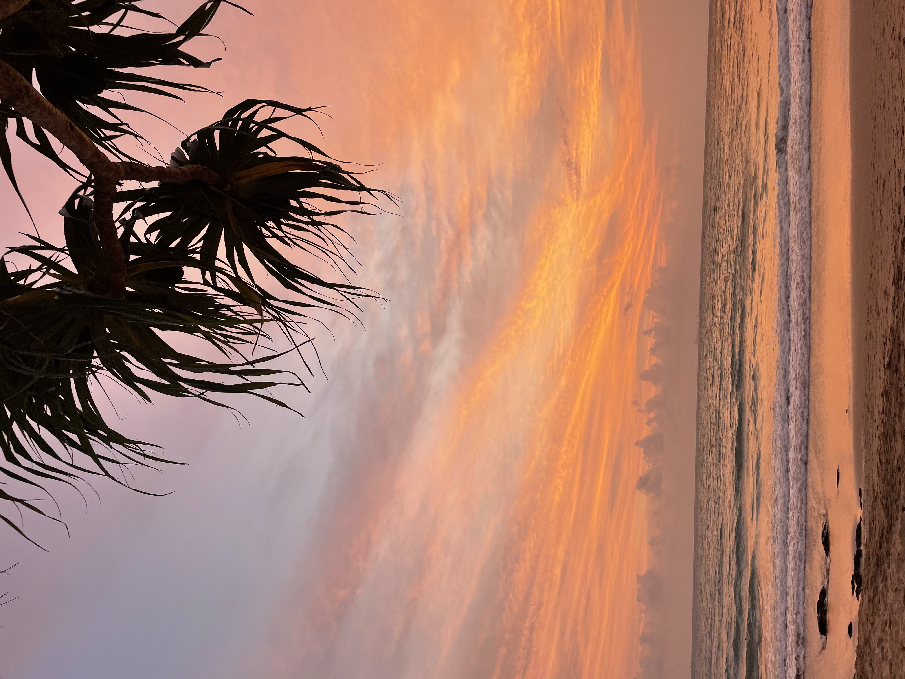
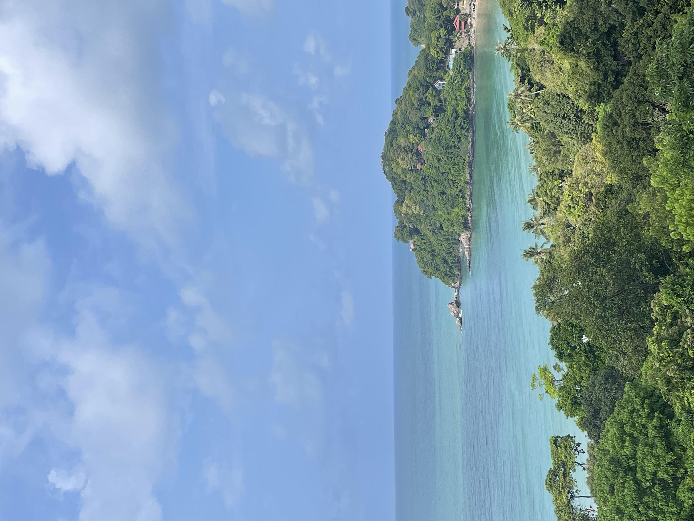
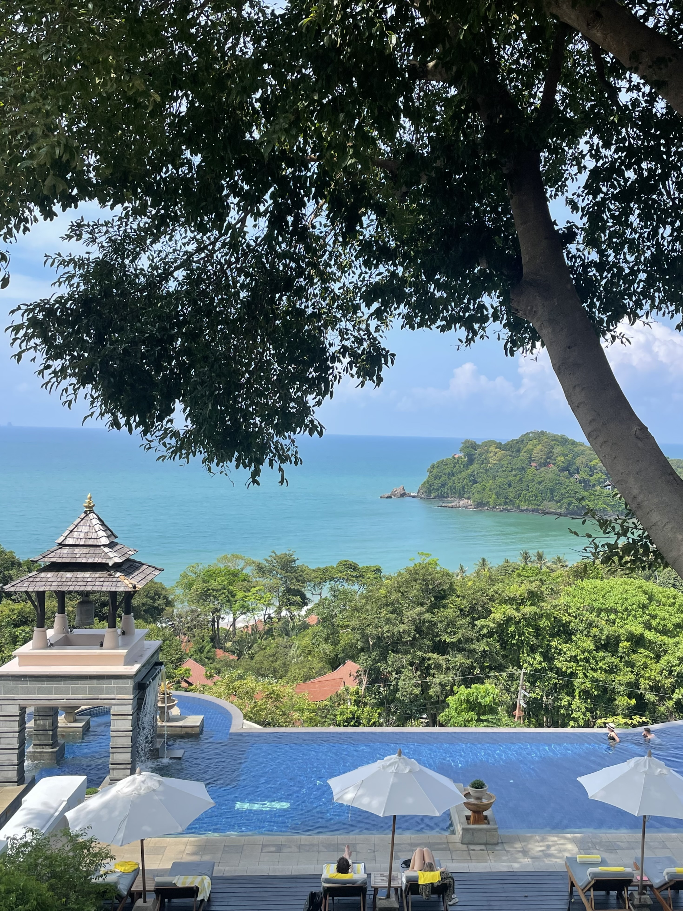
BEST TIME
The dry season is generally the best time to enjoy Koh Lanta, with warmer, sunnier days and calmer seas.
THE FEELING
Koh Lanta has a wonderfully unhurried feel. Long beaches, warm water and evenings that don't need a plan.
GETTING AROUND
Scooters, cars and local transfers make exploring the island straightforward, while many of the best days require very little travelling at all.
OUR RECOMMENDATIONS
01
Our base on Koh Lanta. We stayed in a spacious duplex private pool villa, giving us somewhere to properly switch off between swims, meals and island adventures.
02
Some of our favourite moments were the simplest ones — swimming, wandering down the beach and settling into a relaxed meal as the day started to cool.
03
Having a chef come and cook for us on the terrace was one of the highlights of the stay. It turned an evening at the villa into something that felt genuinely special.
04
Daily Muay Thai lessons became part of our island routine. A brilliant way to start the day before heading back to the pool, beach or breakfast.
05
Koh Lanta's east coast offers a completely different side of the island, with traditional wooden buildings, small restaurants and a quieter local atmosphere.
06
At the southern end of the island, the national park brings together forest, coastline and a wilder side of Koh Lanta that feels far removed from the resort life.
FROM THE JOURNAL
Koh Lanta felt like exactly the kind of island escape we had been looking for. Beautiful beaches, warm water and a slower pace made it easy to settle into holiday mode without feeling that we needed to fill every day.
Our days developed their own rhythm. Daily Muay Thai lessons, swims, relaxed meals down the beach and time around the villa were enough. One of the highlights was having a chef come and cook for us on the terrace — the sort of evening that makes a family holiday feel very different from everyday life.
Perhaps that was what we liked most about Koh Lanta. There was always somewhere to go or something to see, but there was never any pressure to do it. Sometimes the best island days were simply the ones where we stayed close to the water.
MORE FROM OUR CAMERA
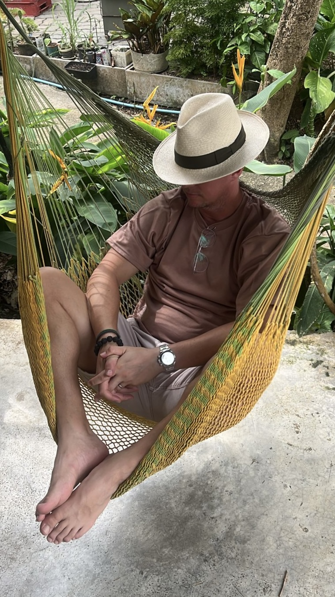
OUR MAP
An island of long beaches, jungle-covered hills and slow days on Thailand's Andaman coast. Koh Lanta now joins the places we've explored across Asia.